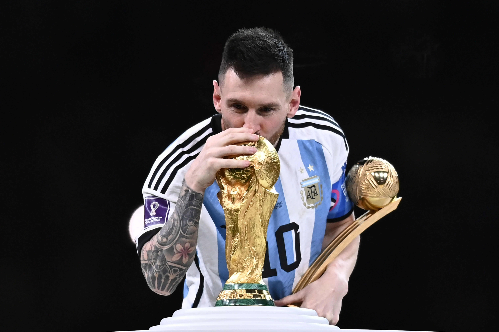

Lionel Messi
24 de junho de 1987 (idade 37 anos)

Lionel Andrés Messi Cuccittini é um futebolista argentino que atua como atacante e atualmente defende o Inter Miami. Como capitão da Seleção Argentina, venceu a Copa do Mundo do Catar de 2022.